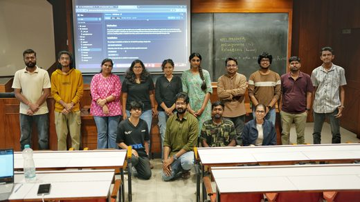
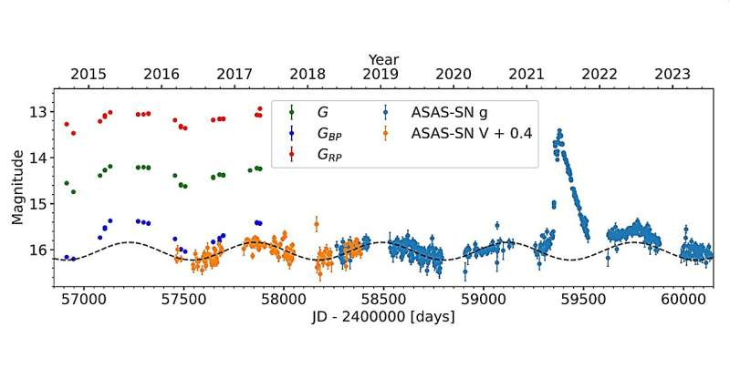
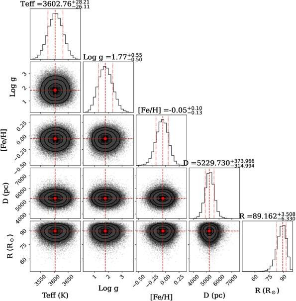
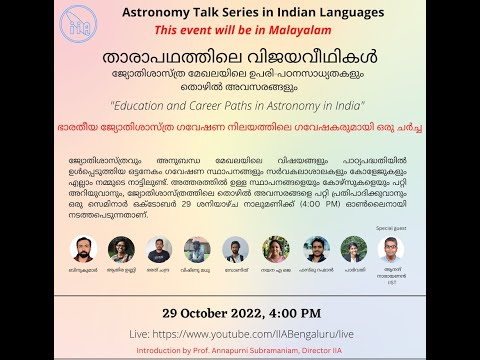

Media & outreach
Research stories, public conversations, and sharing astronomy beyond the observatory.
Code/Astro 2026 local hub

I served as a local organiser, liaison, and teaching assistant at the Code/Astro 2026 local hub at Raman Research Institute, Bengaluru, during 22–27 June 2026.
Visit the Code/Astro websiteTCP J1822 is a symbiotic star, observations find

Phys.org featured our work on TCP J18224935−2408280. Using optical spectra from the Himalayan Chandra Telescope, we confirmed the system’s symbiotic nature and traced its evolution during outburst.
Read the story on Phys.orgThe 2021 hot-type symbiotic outburst of YY Herculis: An optical follow-up study

IIA highlighted our optical follow-up of the 2021 outburst of YY Herculis. Observations with the Himalayan Chandra Telescope traced its spectral evolution from 2021 to 2023 and explored how the inferred properties of the hot component vary with orbital phase.
Read the IIA highlightCareers in astronomy (in Malayalam)

Watch on YouTubeI joined fellow IIA researchers for a panel discussion and Q&A on education and career paths in astronomy in India, as part of the IIA Talk Series in Indian Languages.
Watch the discussion on YouTube